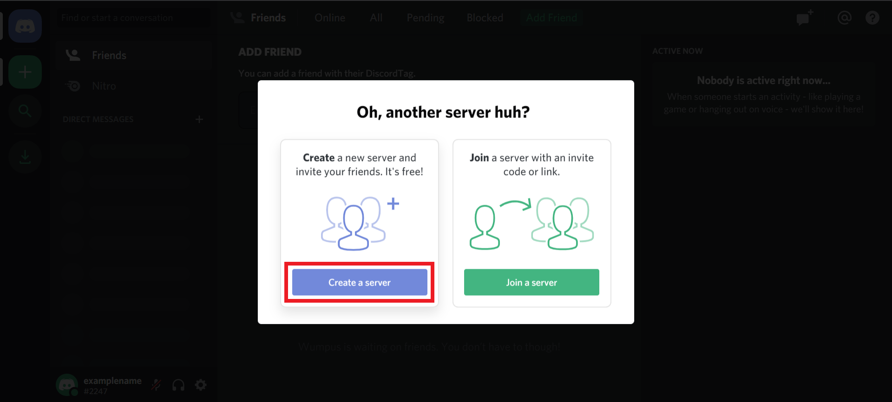
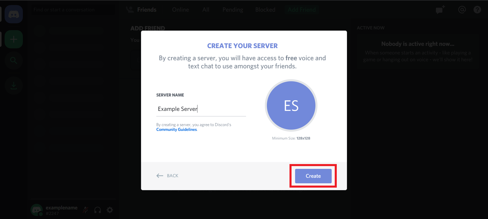

Cyber
HUB
Discord - Create Server
Step 1 - Log in to your Discord account
Step 2 - Once logged into your Discord account, on the homepage, click the + icon
Step 3 - A popup will appear asking if you want to create or join a server. Click Create a server.

Step 4 - Another popup will appear, asking for you to input your server name. Make this name something descriptive and easy to remember. By default, the server icon will be the initials of the Server Name. You can click on this icon to change it before creating the server.
Step 5 - Once you’ve chosen your server name and icon, click Create.

Step 6 - You will then be taken to the homepage of your new server. A popup will appear with an invite link that you can use to invite other users to your server. For now, click the X to skip this.
Manage Existing Server
Contacts